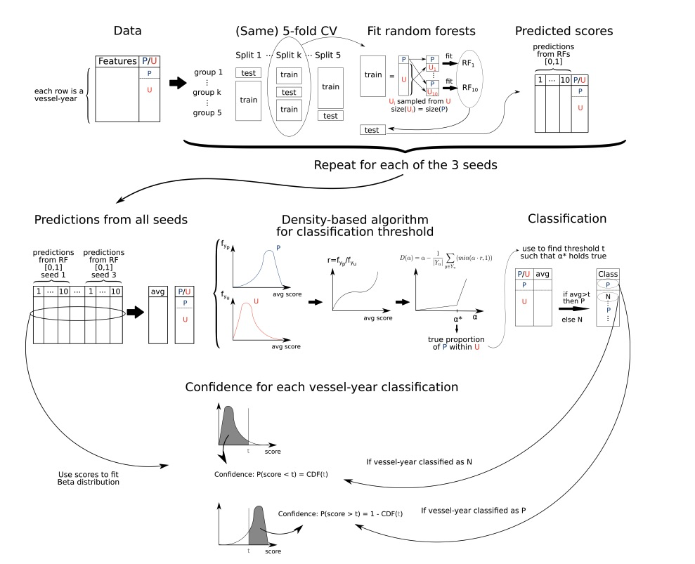

Forced labor risk workflow on a sample dataset
Source:vignettes/using_the_package.Rmd
using_the_package.RmdOverview
forcedlabor is an R package developed for training a
positive–unlabeled (PU) model to detect fishing vessels exhibiting
behaviors or characteristics consistent with forced-labor offenders.
The model characteristics, particularly the PU approach, obey to the nature of the available data on forced labor:
- We have positive cases of forced labor, which refer to vessels reported to have engaged in forced labor. The model uses vessel-year as a unit for forced labor cases.
- While there are confirmed reports of certain vessels engaged in forced labor, a confirmation of the absence of forced labor is extremely difficult to find. The immense majority of vessels are not inspected for labor exploitation, and even those that are, are usually inspected at port. A certification in port is not 100% guarantee of the absence of forced labor at sea. So instead of having negative cases to train the model along with the positive ones, the model takes unlabeled cases–with an unknown mix of positive and negative cases. Unlabeled cases are thus vessel-year combinations for which we have no information (no evidence of being positive but also no evidence of them being negative).
- We had access to a list of vessels certified as compliant with the ILO C188 requirements for work and living conditions. These certifications were based on documents and inspections at port. They can be seen as negative cases, but for the reasons mentioned above, they are not used for training the model. We rather generate predictions for them after the training, expecting them to be classified as negative.
The dataset in this package
The dataset, fl_sample_data, comes from a real dataset
of positive and unlabeled cases, with one row per vessel-year and
columns corresponding to vessel identity, the features of the model
based on AIS data (and briefly described in the section below), and
columns to identify the positive cases (known_offender
column), negative cases (known_non_offender column), and
unlabeled cases (0 values in known_offender
and in known_non_offender). The original dataset contained
more than 100 positive cases and almost a million vessel-years of
unlabeled data. The gear types included are trawlers, longlines and
squid jiggers. To generate fl_sample_data, we anonymized
the vessels, kept most of the positives (127), and randomly sampled
10,000 vessel-years from the unlabeled, so that there could be a
manageable sample to run the functions in the package in a local
computer. This sample does not contained real negative cases (the
C188-certified vessels), as they were obtained under a non-disclosure
agreement. If further negative cases are made available and it is
possible to share them publicly, we could add them to the holdout
dataset of the package in the future.
In fl_sample_data, 100 of the positives are meant to be
used to train the model and the other 27 should be used as a holdout
dataset. 9900 of the unlabeled would be used for training and the other
100 would be used as a holdout dataset. The holdout dataset is later
used to compute performance metrics. The rows with
holdout == 1 correspond to the holdout dataset and those
with holdout == 0, to the training dataset.
Model features
The features used for classification correspond to vessel characteristics and variables describing vessel activity at sea that can help identify vessel with forced-labor-like movement patterns.
The features for this model were computed from Automatic Identification System (AIS) data processed by Global Fishing Watch.
The rationale behind why we selected these features is summarized below.
Vessel characteristics
- Gear type shapes expected movement.
- Length, tonnage and engine power may enable longer, farther operations—factors associated with elevated forced-labor risk.
Time at sea
Long voyages and infrequent port visits allow vessels to avoid inspections and limit crew opportunities to report or exit abusive conditions. Excessive overtime is a common indicator of abuse. The following variables are included to capture unusually long daily or yearly effort:
- number of AIS positions
- number of hours at sea
- number of voyages
- average voyage duration (in hours)
- total number of fishing hours
- average daily fishing hours
Distance from shore and port
Operating far from shore may mean greater isolation and reduced oversight. The model includes:
- maximum distance from port (km)
- maximum distance from shore (km)
Multijurisdictional issues
Time in foreign EEZs or on the High Seas, and foreign port visits, increase the jurisdictional complexity to address forced labor cases. The model includes:
- number of fishing hours in foreign EEZs
- number of fishing hours in the High Seas
- number of foreign port visits
Transshipment, encounters, and loitering
Encounters and loitering (stationary behavior at sea that may
indicate a
potential encounter with a non-AIS-broadcasting vessel) patterns can
indicate transshipment events. Transshipments can prolong the time at
sea and enable crew transfers, both of which are linked to higher risk
of forced labor. The model includes:
- number of encounters with other vessels at sea
- number of encounters with vessels reported to have engaged in forced labor,
- average encounter duration (hours)
- number of loitering events
- average loitering duration (hours).
AIS disabling events-“gaps”
Intentional AIS disabling can obscure activity and mask behaviors such as transshipment or other evasive practices. The model includes:
- number of intentional gaps
- average duration (in days) for these gaps
- average distance between the location where an intentional gap begins and the location where it ends
- average distance from port during these gaps
- average distance from shore during these gaps
Model workflow
The forcedlabor package allows to execute the workflow
described in (Joo et al. 2023) (and
updated in a paper in review).

- The function
fl_rfsetup()sets up the model features, response variables, and the parameters required to configure random forests (RFs): our model first fits a series of random forests, using therangerengine within atidymodelsframework. - The function
fl_cvsetup()takes the output offl_rfsetup()and fixes the number of folds (k), bags, seeds and downsampling ratio required to run the cross-validations. These are described in the sections below. - The function
fl_train()fits the RFs for one seed and one bag using therecipeconfiguration fromfl_cvsetup(), creating a series of RF scores for the training data, and optionally, for the holdout dataset. - The function
fl_classification()implements the DEDPUL algorithm, calculating a calibrated thresholdtand classifying the average RF scores againsttto classify each of them aspositiveornegative. The calculation of confidence values can be done optionally. - The function
fl_perf_metrics()calculates recall and specificity (if aholdoutdataset is provided).
Feature pre-processing and model configuration using
fl_rfsetup() and fl_cvsetup()
Following the tidymodels framework, the function
fl_rfsetup() calls recipes package functions
to preprocess the training dataset, specifying roles and transformations
for model features. Importantly, it distinguishes which features will be
used as predictors, which one is the response variable and which one
will be used as control variable to avoid data leakage.
Vessel MMSI (Maritime Mobile Service Identity) –which
can appear in several related cases–is thus used as a control variable
against data leakage (all vessel-year cases from the same vessel were
assigned to either the training or the holdout dataset). This
corresponds to the column ssvid.
Feature transformations included removing near-zero variance
variables with recipes::step_nzv() and removing highly
correlated variables (correlation value can be setup by parameter
corr_threshold).
fl_rfsetup() also calls the parsnip package
to specify hyperparameter values of the RFs, such as the number of
trees, the number of features that will be sampled at each split, the
minimum node size and the regularization factor. The chosen model engine
was the one in package [ranger].
features_model_characteristics <- c("gear",
"engine_power_kw",
"tonnage_gt",
"length_m")
features_model_movement <- c("position_messages",
"hours",
"fishing_hours",
"average_daily_fishing_hours",
"fishing_hours_foreign_eez",
"fishing_hours_high_seas",
"max_distance_from_shore_km",
"max_distance_from_port_km",
"number_encounters",
"number_forced_labor_encounters",
"average_encounter_duration_hours",
"gaps_12_hours",
"average_off_distance_from_port_km",
"average_off_distance_from_shore_km",
"average_gap_days",
"average_gap_km",
"number_foreign_port_visits",
"number_loitering_events",
"average_loitering_duration_hours",
"average_voyage_duration_hours",
"number_voyages")
rf_setup <- fl_rfsetup(training_data = training_df,
y = "known_offender",
x = c(features_model_characteristics,
features_model_movement),
id = "indID",
dont_use = c("known_non_offender"),
control = "ssvid",
corr_threshold = 0.75,
rf_trees = 500,
rf_mtry = 5,
rf_min_n = 10,
rf_reg_factor = 1)The function returns a list with the two elements corresponding to the setup above:
-
$rf_recipe, with the output fromrecipes -
$rf_specwith the RF specification byparsnip
Function fl_cvsetup()
The function fl_cvsetup() creates the whole framework to
fit the RF models for each seed, bag, and fold, from the training data,
the model recipe and the RF specification. As shown in the Figure of the
model workflow, we do a k-fold cross-validation to split the data into
analysis (to train an RF) and assessment (to generate RF scores) for
vessel-years that were not used to train the RF. In this case, we are
doing a 5-fold cross-validation (that will use ssvid as a
variable to control for data leakage), so num_folds = 5. In
each analysis set, the unlabeled cases are more numerous than the
positive cases. For that reason, we downsample the unlabeled in the
analysis set with a downsampling ratio. In this case, we use a 1:1
ratio. The downsampling procedure is repeated num_bags
times (in this case, 10 bags) for each of the five splits. The partition
of samples into analysis and assessment during cross-validation, the
downsampling (num_bags times) and fitting the RFs for each
bag and fold combination, is done for a given initial randomization
seed. We repeat this process for num_common_seeds = 3. With
10 bags and 3 seeds, this yields 30 RF scores per case
(i.e. vessel-year).
num_folds <- 5
num_bags <- 10
down_sample_ratio <- 1
num_common_seeds <- 3
tictoc::tic()
cv_df <- fl_cvsetup(training_data = training_df,
fl_rec = rf_setup$rf_recipe,
rf_spec = rf_setup$rf_spec,
num_seeds = num_common_seeds,
num_bags = num_bags,
num_folds = num_folds,
down_sample_ratio = down_sample_ratio)
tictoc::toc()
#> 0.918 sec elapsedThe output of this function is a list with seeds x bags
elements (here: 3 seeds and 10 bags = 30 elements). Each element of this
list includes the seed, bag number, recipe and a tibble object with the
k-fold cross-validation splits, where the unlabeled data has been
downsampled by themis::step_downsample() and the folds have
been created by rsample::group_vfold_cv().
Training the models: function fl_train()
Once the training data has been prepped and the model recipe and
specifications set, we can now use function fl_train() to
fit RF models and generate scores.
Function fl_train() fits a RF for each fold for a bag
and a seed configuration using the previous recipe, specification steps
and cross-validation setup.
- It applies a downsampling ratio of 1:1 to the training set
- This step returns a list with 2 elements:
train_probabilitiesandpred_probabilitiesifholdoutwas included.train_probabilitiesis list with k elements, which are tibbles. Each tibble contains RF scores for its corresponding assessment rows (from the k-fold validation).pred_probabilitiesis also a list with k tibbles. Each tibble contains RF scores for the holdout rows, using the RF fitted with the analysis rows (from the k-fold validation).
The function is written to receive a single element of the output of
fl_cvsetup() (cv_df in this example). So a
single run (with 5 folds) could be generated like this:
tictoc::tic()
one_trained_model <- fl_train(cv_setup = cv_df[[1]],
rf_spec = rf_setup$rf_spec,
holdout = holdout_df)
tictoc::toc()Tibbles from both train_probabilities and
pred_probabilities include the following columns:
.pred_1 (RF scores), indID (unique vessel
identifier), known offender,
known non offender (unavailable in this dataset), and
holdout.
To train RFs and get scores for all seeds and bags, we can use
for loops or purrr::map(), or parallelize in
machines with very large RAM. In this example, let’s use
purrr::map().
Note that the use of holdout is optional. If omitted,
fl_train() will produce RF scores for the training data
only. If added, it will create RF scores for new data that is not used
in model training.
tictoc::tic()
trained_models <- purrr::map(.x = cv_df,
~fl_train(rf_spec = rf_setup$rf_spec,
holdout = holdout_df))
tictoc::toc()
#> 143.73 sec elapsedtrained_models is composed of a list of length
bags x seeds (in this case, 30). Each element of that list
contains the two elements described above,
train_probabilities and pred_probabilities
if holdout was included.
Let’s extract both lists and create a single dataframe for all
train_probabilities_all <- purrr::map(trained_models, "train_probabilities") |> bind_rows()
pred_probabilities_all <- purrr::map(trained_models, "pred_probabilities") |> bind_rows()
prob_all <- bind_rows(pred_probabilities_all,
train_probabilities_all)
head(prob_all)
#> # A tibble: 6 × 8
#> .pred_1 indID known_offender known_non_offender holdout common_seed bag
#> <dbl> <chr> <fct> <fct> <dbl> <dbl> <int>
#> 1 0.966 6925-4049… 1 0 1 1 1
#> 2 0.996 2070-8649… 1 0 1 1 1
#> 3 0.218 2274-4290… 1 0 1 1 1
#> 4 0.993 7851-9061… 1 0 1 1 1
#> 5 0.282 8482-2197… 1 0 1 1 1
#> 6 0.945 9655-3925… 1 0 1 1 1
#> # ℹ 1 more variable: id <chr>Function fl_classification(): density-based algorithm
for classification
threshold
fl_classification() aggregates all RF scores for each
row, estimates
(upper bound on positives in the unlabeled set) and estimates a
threshold t so that the proportion of predicted positives ≈
.
See (Ivanov 2020) for more details on the DEDPUL algorithm.
tictoc::tic()
classif_res <- fl_classification(data = prob_all,
steps = 1000,
plotting = FALSE,
filepath = NULL,
threshold = seq(0, .99, by = 0.01),
eps = 0.1,
confidence_levels = TRUE
)
#> [1] "alpha: 0.0530530530530531"
tictoc::toc()
#> 11.862 sec elapsed- Within
fl_classification()we apply the calibrated thresholdtto each vessel’s mean RF score (pred_mean):
ifpred_mean > t, thenpred_class = 1, else0. This produces a binary prediction (positive or negative, stored in columnpred_class). - The
confidencevalue indicates how consistently a vessel’s score falls on the same side oftacross seeds × bags. Values near 1 indicate a very stable classification for that vessel-year (i.e. higher confidence in the classification).
class_pos <- sum(classif_res$pred_conf$pred_class == 1)
class_neg <- sum(classif_res$pred_conf$pred_class == 0)In the case of this sample dataset, 10072 vessel-years were classified as negative and 55 were classified as positive for forced labor risk.
Assessing model performance with function
fl_perf_metrics()
The performance of the model is evaluated through:
-
recall: the proportion of positive cases predicted by the model as positive -
specificity: if negative holdout cases have been provided, it is computed as the proportion of negative cases correctly predicted by the model as negatives
tictoc::tic()
perf_metrics <- fl_perf_metrics(data = classif_res$pred_conf)
#> Warning: While computing binary `spec()`, no true negatives were detected (i.e.
#> `true_negative + false_positive = 0`).
#> Specificity is undefined in this case, and `NA` will be returned.
#> Note that 0 predicted negatives(s) actually occurred for the problematic event
#> level, 1
tictoc::toc()
#> 0.054 sec elapsed
print(perf_metrics)
#> recall specif
#> 1 0.16 NAFairness tests
Statistical non-discrimination or fairness measures aim to assess the absence or degree of discrimination of given groups regarding classification.
In this context, this meant assessing whether the model was equally successful (or unsuccessful) at classifying positive vessel-years across different fishing gears.
# Recall by gear
gear_lookup <- training_df |>
distinct(indID, gear)
gear_lookup |> count(gear)
#> # A tibble: 3 × 2
#> gear n
#> <fct> <int>
#> 1 drifting_longlines 1019
#> 2 squid_jigger 383
#> 3 trawlers 8598
gear_lookup |>
left_join(classif_res$pred_conf) |>
group_by(gear) |>
mutate(
known_offender = factor(as.character(known_offender), levels = c("0","1")),
pred_class = factor(as.character(pred_class), levels = c("0","1"))
) |>
yardstick::recall(truth = known_offender,
estimate = pred_class, event_level = "second") |>
select(gear, .estimate)
#> Joining with `by = join_by(indID)`
#> # A tibble: 3 × 2
#> gear .estimate
#> <fct> <dbl>
#> 1 drifting_longlines 0.0833
#> 2 squid_jigger 0.241
#> 3 trawlers 0Unsurprisingly, the randomized sample was not large enough for the model to learn to disentangle forced-labor-like behaviors, but this was necessary to reduce computational costs for this vignette.